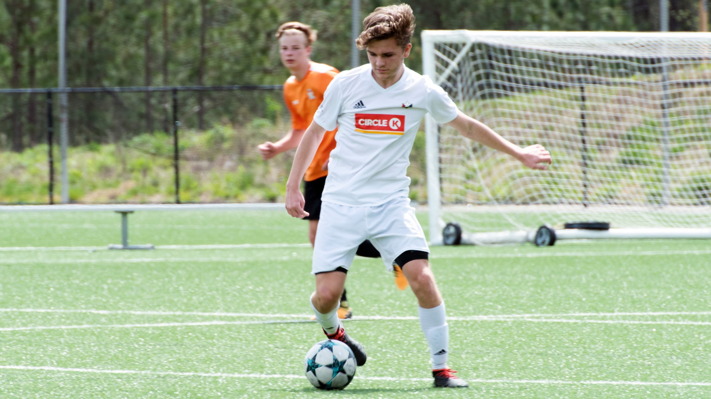
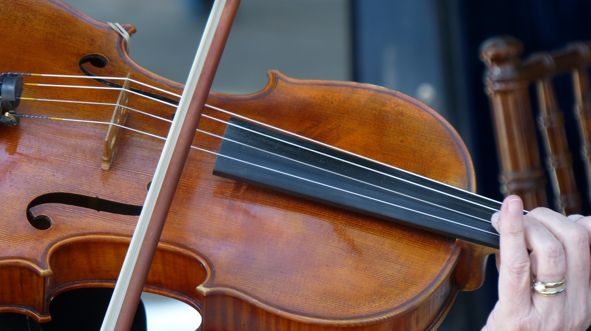
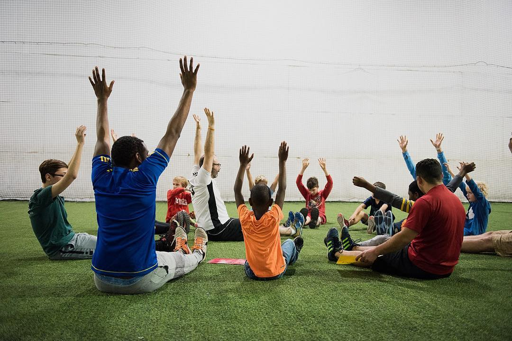

There is more to me than school, much more.
Soccer

I have been playing soccer for as long as I can remember. Soccer has been and continues to be a huge part of my life. I have played for Enloe
Men’s Varsity Soccer Team for all four years of high school and played travel club soccer since 2011 for Triangle FC and North Carolina FC. Before
that I played recreational soccer in Pennsylvania and was on a 3v3 team. My teams have won many awards since I first started playing. In 2008 the
3v3 team I was on qualified for the national tournament after getting second in the Pennsylvania regional. My club team won the 2016 Williamsburg
Columbus Day Invitation and various other tournaments. The Enloe team qualified for the playoffs the first three years I was on the team and made
it to the round of 16 my junior year.
Violin

I first learned to play the violin in 2nd grade. I have played violin individually since then, and first joined an orchestra at the beginning of middle
school. The Ligon Middle School orchestra of which I was a part of played at various festivals and competitions including the Spoleto Music Festival in
2013 and Carnegie Hall in 2014. I am currently a member of the Enloe High School Chamber Orchestra and have been for all of high school.
Volunteering

My love of soccer inspired me to volunteer at Oak City Soccer. The program offers soccer lessons to children with autism or those with sensory processing challenges. The practices are a great opportunity for the kids
to interact with other children and get some exercise. They develop their social skills in a nuturing environment while learning the greatest game in the world. It makes my day to see the kids smile and laugh and to
give them a chance to participate in an activity that otherwise would be unavailable to them.
Enloe Political Satire Club
The Enloe Political Satire Club is a high school club that admires, analyzes, and creates political satire. I have been the Vice President of the club since
its founding in 2017. I help to organize and run the group's meetings, as well as facilitate the writing of the satirical show scripts that the club creates.
Hobbies
My two main hobbies are golf and skiing. I go golfing with my father and grandfather on Sundays as often as we can. Living in Pennsylvania when I was younger
meant that my family would go skiing most weekends. Now that I live where snow is uncommon, we have to travel far away to ski, which is why I only go once a
winter. I also enjoy collecting things, and have a variety of different collections taking up space in my house, including various coins and rocks.